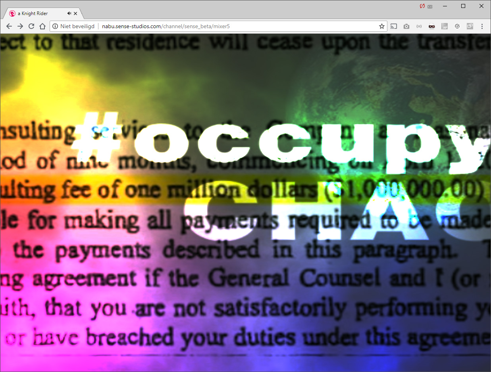

VirtualMixerProject
The VirtualMixerProject is a virtual video mixer that can be build through a chainable interface and runs in WebGL.
A demo can be found here: Demo.

This particular mixer is build with Material from my 'Occupy Chaos'-set, that I performed with in 2011.
But you can add any video library or setup any mixer configuration you want.
With these tools, you can Build your own video mixers in JavaScript. The application takes a number of sources ( video, gif, svg, whathaveyou ) and allows you to crossfades them.
Mixers and Sources are interchangeable, so the output of a one mixer can serve as a source for another mixer.
In this way a series of layers can be 'stacked' or 'chained' together to build even more elaborate mixers.
Check more detailed info the docs at: https://github.com/Sense-Studios/VirtualMixerProject/tree/master/docs
Or continue with the Quickstart
Installation
1) clone the package, defaults to VirtualMixerProject/
$ git clone git@github.com:Sense-Studios/VirtualMixerProject.git
2) run the installer
$ VirtualMixerProject/ npm install
3) start the app
$ VirtualMixerProject/ npm start
Check more detailed info the docs at: https://github.com/Sense-Studios/VirtualMixerProject/tree/master/docs
Or continue with the Quick start
Quickstart
Make sure you include the build files. (and in this order) from the /build directory:
vendor-min.js
mixer-min.js
Write a minimum of Webpage:
<html>
<head>
<script src="path/to//vendor-min.js"></script>
<script src="path/to/mixer-min.js"></script>
</head>
<body>
<canvas/>
</body>
</html>
And some javascript add the end of the body
<html>
<head>
<script src="path/to/vendor-min.js"></script>
<script src="path/to/mixer-min.js"></script>
</head>
<body>
<canvas/>
<script>
var renderer = new GlRenderer();
var testSource1 = new GifSource( renderer, { src: 'path/to/somefile.gif' } );
var testSource2 = new VideoSource( renderer, { src: 'path/to/somefile.mp4' } );
var mixer1 = new Mixer( renderer, { source1: testSource1, source2: testSource2 } );
var output = new Output( renderer, mixer1 )
renderer.init();
renderer.render();
</script>
</body>
</html>
The most basic mixer setup is laid out hereunder in ASCII art:
______________
| Renderer |
--------------
|
|
_________ <--- Pod (float)
| Mixer | <--- Mixmode (number)
--------- <--- Blendmode (number)
/ \
/ \
/ \
____________ ____________ <--- somefile.mp4
| Source 1 | | Source 2 | <--- play, pause, currentTime, etc. (html5 interface)
------------ ------------ This diagram flows from bottom to top. By defauld the pod of the mixer is set to 0, so we see Source 1 in our renderer.
Set the pod to 1 to show the Source 2. Or set it to any value in between to mix the two sources together.
mixer1.pod(0) // default shows Source 1
mixer1.pod(1) // shows Source 2
mixer1.pod(0.5) // shows both sources at 50%, not that this is darker as both add to only ~75% opacity
mixer1.pod(0.75) // shows Source 1 at ~25% opacity and Source 2 at ~75% opacity ( ~90% total opacity )
// add a function that moves the mixer handle from left to right.
var c = 0;
setInterval( function() {
c += 0.01
mixer1.pod ( ( Math.sin(c) * 0.5 ) + 0.5 );
})
Mixmode
Mixers support a Mixmode.
The Mixmode defines the curvature of the crossfade.
In a regular crossfade, source 1 would fade out while source 2 fades in. At the center both sources are then both at 50% opacity; however, 2 sources with 50% opacity only add up to ~75% opacity, not to 100%. This means that the output is darker in the middle of the crossfade then it is at both ends. This is the default Mixmode, the other modes play with these settings
- 1: NORMAL (default), regular, linear crossfade
- 2: HARD, switches with a hard cut at 50%
- 3: NAM, fades with an upward curvature forcing 100% opacity throughout the crossfade (lighter!)
- 4: FAM, fades with a downward curve, forcing a 'overlay' period
- 5: NON DARK, Never goes dark, 0-2 linear curve, capped at 1 and .36
- 6: LEFT, forces the pod on 0 (locks pod)
- 7: RIGHT, forces the pod on 1 (locks pod)
- 8: CENTER, forces both sources at ~66% (locks pod)
- 9: BOOM forces both sources at 100%, allows for overflow (lighter!) (locks pod)
Blendmode
Mixers also support a Blendmode.
Think of them as the a Photoshop Blendmodes. They tell the mixer how to blend Source 1 and Source 2 together.
1 ADD (default),
2 SUBSTRACT,
3 MULTIPLY,
4 DARKEN,
5 COLOUR BURN,
6 LINEAR_BURN,
7 LIGHTEN,
8 SCREEN,
9 COLOUR_DODGE,
10 LINEAR_DODGE,
11 OVERLAY,
12 SOFT_LIGHT,
13 HARD_LIGHT,
14 VIVID_LIGHT,
15 LINEAR_LIGHT,
16 PIN_LIGHT,
17 DIFFERENCE,
18 EXCLUSIONSwitch both mixer and blendmode in realtime:
mixer1.mixMode() // shows mixmode (default 1, NORMAL)
mixer1.mixMode(8) // set MixMode to BOOM
mixer1.blendMode(1) // set blendmode to ADD (default)
mixer1.blendMode(14) // set blendmode to VIVID_LIGHTInstallation
1) clone the package, defaults to VirtualMixerProject/
git clone git@github.com:Sense-Studios/VirtualMixerProject.git
2) run the installer
npm install
3) start the app
npm start
You might want to test the program with npm test.
point your browser to 127.0.0.1:3000 and enjoy the show.
check out the docs for more info
Roadmap
- Set up a Node editor
- Hook up Midi controller
- add configuration for Firebase
- Phase out express for lightweight server/ templating
- Phase out jQuery
- Phase out ThreeJS
But Why?!
"Any application that can be written in JavaScript, will eventually be written in JavaScript."
-- Jeff Atwood